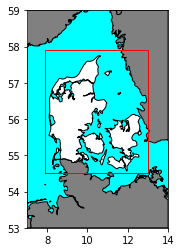
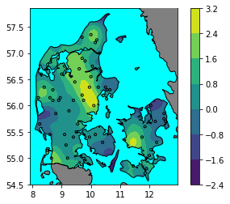
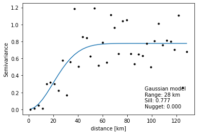
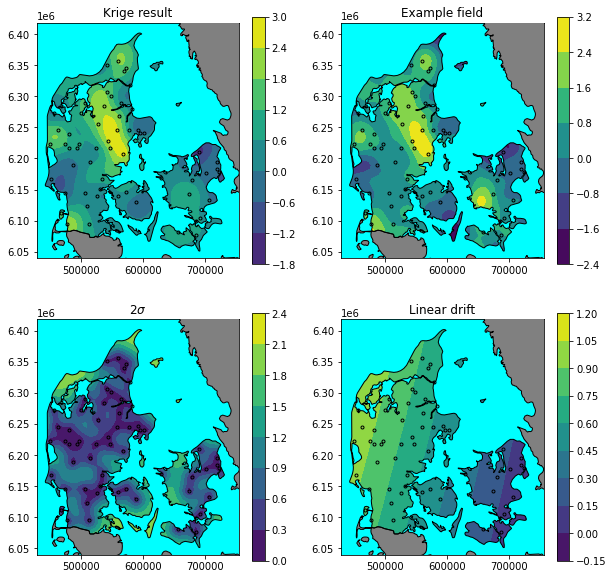
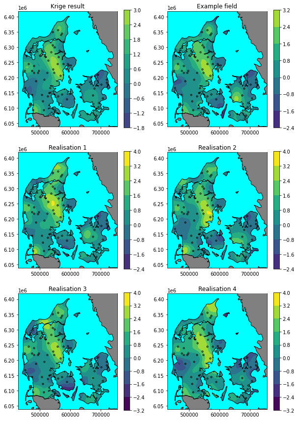

Kriging and map projection
An example of kriging and map projection in Python 3. Geopandas is used for reading and plotting data from shapefiles; pyproj for projecting data from geographic coortinates to UTM coordinates; the kriging solution from osgeo, gstools is used to fit the data, and generate conditioned fields; shapely is used to generate geometries; scipy.ndimage is used for vector-raster arithmetic; numpy for array manipulations; and matplotlib for ploting maps.
Imports are at the bottom of the page
Map setup
Define projections: EPSG:4326 is the geographical reference (WGS-84), and the map is plotted in UTM zone 32N (EPSG:32632).
epsg_geog = 'EPSG:4326'
epsg_plot = 'EPSG:32632'
Define map boundaries.
bounds = Polygon(((7,53),(7,59),(14,59),(14,53)))
bounds_gdf = gpd.GeoDataFrame(geometry=[bounds], crs=epsg_geog)
grid_bounds = Polygon(((7.9,54.5),(7.9,57.9),(13,57.9),(13,54.5)))
grid_bounds_gdf = gpd.GeoDataFrame(geometry=[grid_bounds], crs=epsg_geog)
Read basemap data and filter with map boundary.
countries_gdf = gpd.read_file('../basemap/ne_10m_admin_0_countries/ne_10m_admin_0_countries.shp',
mask=bounds_gdf)
countries_gdf = gpd.clip(countries_gdf, bounds_gdf)
AOI_gdf = countries_gdf[countries_gdf['ADMIN'] == 'Denmark']
neighbours_gdf = countries_gdf[countries_gdf['ADMIN'] != 'Denmark']
sea_gdf = gpd.overlay(bounds_gdf, countries_gdf, how='difference')
It’s tedious to replot the basemap for each map. Therefore its encapsulated in a function.
def plot_basemap(ax, x, y, crs=epsg_geog):
sea_gdf.to_crs(crs).plot(fc='aqua', ec='none', ax=ax, zorder=1)
neighbours_gdf.to_crs(crs).plot(fc='gray', ec='k', ax=ax, zorder=3)
AOI_gdf.to_crs(crs).plot(fc='none', ec='k', ax=ax, zorder=5)
ax.set_xlim(x.min(), x.max())
ax.set_ylim(y.min(), y.max())
Plot basemap data and grid boundary.
fig, ax = plt.subplots()
plot_basemap(ax, np.array([7,14]),np.array([53,59]))
grid_bounds_gdf.plot(fc='none', ec='r', ax=ax, zorder=13)

Generate example conditioned field
We generate a conditional field using a gaussian kernel with a functional range of 30 km, semivariance of 1, and a regional linear drift. The drift is added to the value as a multiple of the latitude and longitude.
# structured field with a size 100x100 and a grid-size of 1x1
seed = 1259
grid_step = 0.05 # Degrees
lon0, lat0, lon1, lat1 = grid_bounds.bounds
lon = np.arange(lon0, lon1, grid_step)
lat = np.arange(lat0, lat1, grid_step)
model = gs.Gaussian(dim=2, var=1, len_scale=30/gs.EARTH_RADIUS, latlon=True)
srf = gs.SRF(
model,
seed=seed,
trend=lambda lon, lat: lon*0.01-lat*0.002,
)
srf((lat, lon), mesh_type='structured');
Generate meshgrid for projection at a later stage
LON, LAT = np.meshgrid(srf.pos[1], srf.pos[0])
Z_true = srf.field
Now that we have the mesh grid we can create a mask for the AOI (Area Of Interest).
mask = shpvec.contains(AOI_gdf.iloc[0].geometry, LON, LAT)
mask = np.equal(mask, False)
mask = ndimage.binary_erosion(mask, border_value=1, iterations=4)
In order to emulate real world sampling, we generate sampling points randomly inside the AOI. First a samples are generated with a uniform distribution within the grid boundary.
n_pts = 150
np.random.seed(seed)
pts_lon = lon.min()+np.random.rand(n_pts)*(lon.max()-lon.min())
pts_lat = lat.min()+np.random.rand(n_pts)*(lat.max()-lat.min())
pts_gdf = gpd.GeoDataFrame(
geometry=[Point(*xy) for xy in zip(pts_lon, pts_lat)],
crs=epsg_geog
)
Sampling locations are moved to the grid center, and value is sampled.
pts_gdf['z'] = None
for i, pt in enumerate(pts_gdf.geometry):
pt_lon, pt_lat = pt.coords[0]
i_lon = np.abs(lon - pt_lon).argmin()
i_lat = np.abs(lat - pt_lat).argmin()
pts_gdf.loc[i,'geometry'] = Point(LON[i_lat, i_lon], LAT[i_lat, i_lon])
pts_gdf.loc[i,'z'] = Z_true[i_lat, i_lon]
Samples lying at sea are filtered from the dataset.
pts_gdf = gpd.overlay(pts_gdf, AOI_gdf, how='intersection')
pts_lon, pts_lat = [*zip(*[g.coords[0] for g in pts_gdf.geometry])]
pts_lon, pts_lat = np.array(pts_lon), np.array(pts_lat)
pts_z = np.array(pts_gdf['z'])
Plot the final sampling locations and the random field.
fig, ax = plt.subplots()
cont = ax.contourf(LON, LAT, np.ma.masked_array(Z_true, mask), zorder=-30)
plt.colorbar(cont)
plot_basemap(ax, lon, lat)
pts_gdf.plot(marker='.', edgecolor='k', facecolor='none', ax=ax);
print(len(pts_gdf))

Time to Krige
First we fit a the variogram. In this case we use the fitting routine built into the gstools module. We make sure to use spherical coordinates by setting latlon = true.
The rescale = gs.EARTH_RADIUS parameter rescales great circle distances to kilometers rather than the default: radians.
bins = gs.standard_bins(
(pts_lat, pts_lon),
latlon=True,
bin_no=40,
)
bin_c, vario = gs.vario_estimate((pts_lat, pts_lon), pts_z, bins, latlon=True)
model = gs.Gaussian(rescale=gs.EARTH_RADIUS, dim=2, latlon=True)
model.fit_variogram(bin_c, vario, nugget=True)[0];
Then we plot the semivariogram for a visual inspection.
fig, ax = plt.subplots()
ax.plot(bin_c*model.rescale, model.variogram(bin_c))
ax.plot(bin_c*model.rescale, vario, '.k')
ax.set_xlabel('distance [km]')
ax.set_ylabel('Semivariance')
ax.annotate(
text='{} model\nRange: {:0.0f} km\nSill: {:0.3f}\nNugget: {:0.3f}'.format(
model.name,model.len_scale, model.sill, model.nugget),
xy=(0.95,0.05),
xycoords='axes fraction',
ha='right', ma='left', va='bottom'
);

Having a suitable semivariogram we now proceed to fit the kriging model. Here we use universal kriging, to account for regional drift.
def drift_lat(lat, lon):
return lat
def drift_lon(lat, lon):
return lon
uk = gs.krige.Universal(
model=model,
cond_pos=(pts_lat, pts_lon),
cond_val=pts_z,
drift_functions=[drift_lat, drift_lon],
pseudo_inv=True,
)
Now the model fitted to the data, we can calculate expected values and variance.
Z_fit, Z_v = uk((lat, lon), mesh_type="structured")
Z_mean = uk((lat, lon), mesh_type="structured", only_mean=True)
Z_se = (Z_v**0.5)
Plot maps
Before plotting we setup the projection: UTM zone 32N.
T = ppr.proj.Transformer.from_crs(crs_from=epsg_geog, crs_to=epsg_plot)
PR_X, PR_Y = T.transform(LAT, LON)
pts_x, pts_y = T.transform(pts_lat, pts_lon)
A color norm is used to synchronize colors across the maps, allowing easy comparison.
norm = Normalize(
np.min([srf.field, Z_fit]),
np.max([srf.field, Z_fit])
)
And finally we can plot the maps.
fig, axes = plt.subplots(2, 2, figsize=(10,10))
ax = axes[0,0]
plot_basemap(ax, PR_X, PR_Y, crs=epsg_plot)
cont = ax.contourf(PR_X, PR_Y, np.ma.masked_array(Z_fit, mask), norm=norm, zorder=0)
ax.plot(pts_x, pts_y, '.k', mfc='none', mew=1)
plt.colorbar(cont, ax=ax)
ax.set_title('Krige result')
ax = axes[0,1]
plot_basemap(ax, PR_X, PR_Y, crs=epsg_plot)
cont = ax.contourf(PR_X, PR_Y, np.ma.masked_array(srf.field, mask), norm=norm, zorder=0)
ax.plot(pts_x, pts_y, '.k', mfc='none', mew=1)
plt.colorbar(cont, ax=ax)
ax.set_title('Example field')
ax = axes[1,0]
plot_basemap(ax, PR_X, PR_Y, crs=epsg_plot)
cont = ax.contourf(PR_X, PR_Y, np.ma.masked_array(Z_se*2, mask), zorder=0)
ax.plot(pts_x, pts_y, '.k', mfc='none', mew=1)
plt.colorbar(cont, ax=ax)
ax.set_title('2$\sigma$')
ax = axes[1,1]
plot_basemap(ax, PR_X, PR_Y, crs=epsg_plot)
cont = ax.contourf(PR_X, PR_Y, np.ma.masked_array(Z_mean, mask), zorder=0)
ax.plot(pts_x, pts_y, '.k', mfc='none', mew=1)
plt.colorbar(cont, ax=ax)
ax.set_title('Linear drift');

Plot realisations of the resulting random field
Following the same procedure as above we can plot realisations of the random field. First we generate conditioned surfaces using the universal kriging fit as the condition.
realisations = []
for i in range(4):
cond_srf = gs.CondSRF(uk)
cond_srf((lat, lon), mesh_type="structured")
realisations.append(cond_srf)
norm = Normalize(
min([*[r.field.min() for r in realisations], Z_fit.min(), srf.field.min()]),
max([*[r.field.max() for r in realisations], Z_fit.max(), srf.field.max()]),
)
fig, axes = plt.subplots(3, 2, figsize=(10,15))
ax = axes[0,0]
plot_basemap(ax, PR_X, PR_Y, crs=epsg_plot)
cont = ax.contourf(PR_X, PR_Y, np.ma.masked_array(Z_fit, mask), norm=norm, zorder=0)
ax.plot(pts_x, pts_y, '.k', mfc='none', mew=1)
plt.colorbar(cont, ax=ax)
ax.set_title('Krige result')
ax = axes[0,1]
plot_basemap(ax, PR_X, PR_Y, crs=epsg_plot)
cont = ax.contourf(PR_X, PR_Y, np.ma.masked_array(srf.field, mask), norm=norm, zorder=0)
ax.plot(pts_x, pts_y, '.k', mfc='none', mew=1)
plt.colorbar(cont, ax=ax)
ax.set_title('Example field')
for i in range(4):
ax = axes[1 + (i//2), i%2]
plot_basemap(ax, PR_X, PR_Y, crs=epsg_plot)
cont = ax.contourf(PR_X, PR_Y, np.ma.masked_array(realisations[i].field, mask), norm=norm, zorder=0)
ax.plot(pts_x, pts_y, '.k', mfc='none', mew=1)
plt.colorbar(cont, ax=ax)
ax.set_title(f'Realisation {i+1}')

Imports
%matplotlib inline
import numpy as np
import matplotlib.pyplot as plt
import geopandas as gpd
import gstools as gs
import pyproj as ppr
from copy import copy
from scipy import ndimage
from shapely.geometry import Polygon
from shapely.geometry import Point
import shapely.vectorized as shpvec
from matplotlib.colors import Normalize